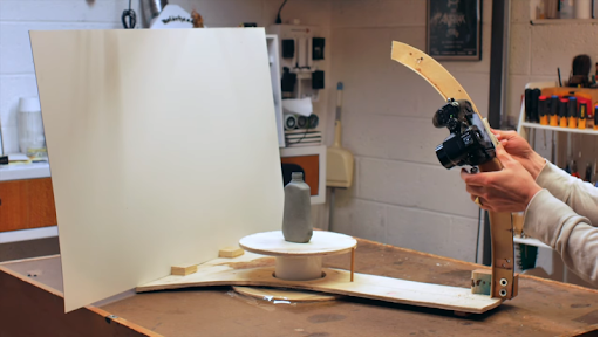
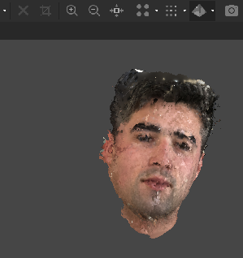
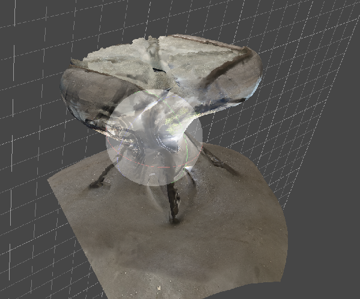
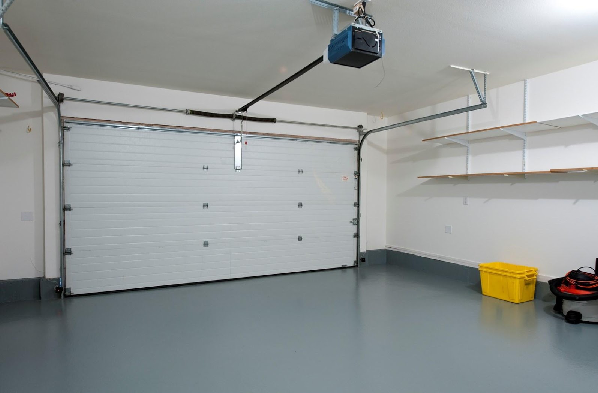
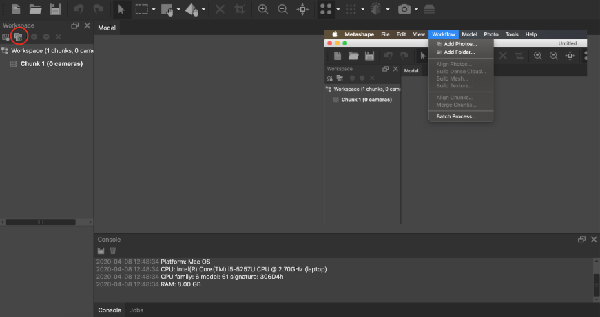
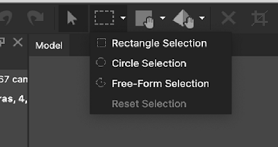
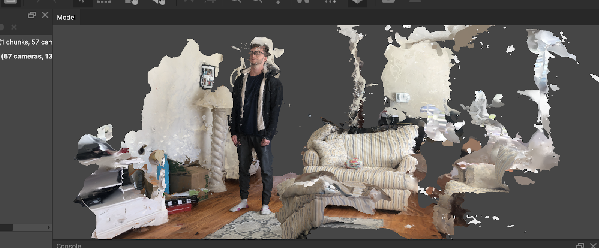
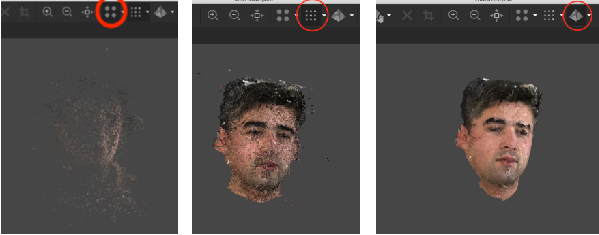

The Surprisingly Simple Process of 3D Modeling with Photogrammetry
The Surprisingly Simple Process of 3D Modeling with Photogrammetry
Have you ever seen something or someone and thought, “Hey… I’d like to turn this into a 3D model that I can print”. Well think no more, I’m going to tell you how to get started, all you need is a smartphone and a computer.
I got started using a drone, where images from above can provide quick and highly accurate models of large areas and buildings. But, the concepts are scalable, and a phone camera works just fine for small objects and people.
 Anyway, I used Agisoft Metashape to get started. It is a great product with a 30-day free trial and a very quick, easy download which is compatible
with Linux, Mac, and Windows. Give it a Google
search and find the free trial install.
Anyway, I used Agisoft Metashape to get started. It is a great product with a 30-day free trial and a very quick, easy download which is compatible
with Linux, Mac, and Windows. Give it a Google
search and find the free trial install.
Choose your Subject
Once you have Metashape installed, it is time to choose your object or person. I have found that people work best for 3D modeling using smartphones because of the texture, size, opacity, and reflectivity of human faces, but the right object can work just as well given the right circumstances. Professional photogrammeters use rigs in order to perfectly capture every angle of an object with a consistently lit surface. For the purposes of this post, however, we leave the object or person stationary on the floor (or standing) and rotate the camera around it/them at many different (eyeballed) angles. 
A good subject means that it is:
 -A person: people work really well in amateur photogrammetry processes because of likely bad lighting and the effectiveness of handheld smartphone cameras. This screenshot is my second attempt at a person. I only used about 65 images, and got subpar results, which is much better than it could have gone using so few images and terrible lighting.
 -A larger object with low reflectivity and high opacity. Smaller objects don’t work as well with poor lighting and background because Metashape can’t tell what is the floor or what is the object – in other words, the depth is bad. Photogrammetric software has a lot of trouble understanding why reflective and see-through objects look so different from different angles. This table was the first object I attempted to model, it has a transparent glass top. It came out terrible – like a muffin too big for its container. This is because Metashape couldn’t understand what images belonged where in the model due to the see-through top.
Take the Photos
Now that you have your subject, find a wide open area with pretty consistent lightning. So, close windows, turn on overhead lights, and clear an area with about a 3foot radius around your subject, you will need more room than you think. If it’s cloudy outside, then that is perfect.  Next take out your smartphone and photograph the subject! For the purpose of this, just have the subject stay stationary and rotate around with your camera. Auto settings are fine. The idea is to photograph 360 degrees around your subject at many different angles. So directly above (90 degrees), then slightly lower at about 65 degrees, then 35 degrees, then 0 degrees. This doesn’t have to be exact; the models will likely look like a first try. Try to get a decent amount of overlap as you rotate around the subject, but about 50 photos is plenty for your first model.
Upload and Process in Metashape
The hard part is over! Next, import your photos to Metashape as indicated in the figure below.  The rest of the process is very simple, but it does take time. Basically it will all be done in the workflow tab: 
Select them, and apply the processes in descending order. So, align the photos, then build dense cloud, then mesh, then texture. Each process will make the model look more and more like the real thing. Note: you must continuously crop during each step. You can do this very easily by using the crop tool: After you select points and areas which will be of the room you are modeling in, click the X two spaces the the right of the crop tool. This will delete the selected points. Alternatively, select the parts you want to keep and click the “crop selected” button three to the right of the crop tool in order to delete everything other than the selected. If you crop nothing, you will get something like this:  After each step, you can view progress by selecting “point cloud”, “dense cloud”, and “texture/mesh” views: 
Another note: To hide the weird blue squares (which actually indicate where the picture was take and what angle relative to the subject), grid, and trackball, simply click Model 🡪 Show/hide items and then click whatever you don’t want to see anymore.
Subscribe to UMass Amherst Makerspace
Get the latest posts delivered right to your inbox